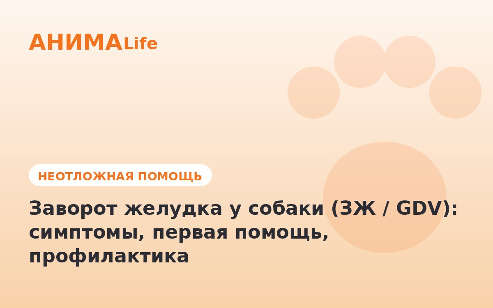

Заворот желудка у собаки (ЗЖ / GDV): симптомы по минутам, первая помощь, профилактика

2 июня 2026 · 9 минут чтения · Неотложная помощь
Заворот желудка — одна из немногих по-настоящему смертельных ветеринарных экстренных ситуаций, где счёт идёт буквально на часы. Желудок раздувается газом, перекручивается вокруг своей оси и перекрывает кровоснабжение. Без операции собака погибает за 4-6 часов. Знание симптомов и правильные действия в первые 30 минут — это разница между жизнью и смертью.
Если вы подозреваете заворот желудка — не читайте статью, звоните в скорую ветеринарную помощь прямо сейчас. AnimaLife vet-AI поможет оценить симптомы и найти ближайшую круглосуточную клинику.
Открыть AnimaLife в Telegram → ·
Открыть в MAX →
Что такое заворот желудка: механизм за 2 минуты
GDV (Gastric Dilatation-Volvulus) — это двухэтапный процесс. Сначала происходит дилатация: желудок растягивается газами или содержимым сверх нормы. Затем — вольвулюс: растянутый желудок перекручивается вокруг пищевода и двенадцатиперстной кишки как перевёрнутая сумка. После этого выход газа становится невозможным, кровоснабжение желудка и селезёнки прекращается.
Результат — некроз стенки желудка, токсический шок, аритмия сердца, коллапс. Смертность без операции — 100%. Даже с операцией, если прошло более 6 часов — 30-40%. Если оперировали в первые 1-2 часа — выживаемость 80-90%.
Точная причина до сих пор не установлена однозначно. Основные факторы риска — анатомические (большая грудная клетка с узким животом), генетические, пищевые и поведенческие.
Породы с наивысшим риском
Заворот желудка — болезнь крупных глубокогрудых пород. Глубокая грудная клетка создаёт анатомическую предрасположенность: желудок висит свободно и при определённых условиях начинает смещаться.
- Немецкая овчарка — одна из самых высоких частот GDV среди всех пород. По данным Purdue University, пожизненный риск составляет около 24%.
- Немецкий дог — самая высокая частота заболевания: пожизненный риск до 42%. Если у вас дог — тема профилактической гастропексии должна быть обсуждена с врачом при кастрации.
- Ризеншнауцер, стандартный пудель — умеренно высокий риск.
- Лабрадор-ретривер, голден-ретривер — риск ниже, чем у догов, но за счёт огромной популярности породы — одни из самых частых пациентов с GDV в российских клиниках.
- Ирландский сеттер, веймаранер, боксёр, ротвейлер, бассет-хаунд — умеренный и высокий риск.
Собаки старше 7 лет — риск выше в 2-3 раза по сравнению с молодыми животными той же породы. Кобели болеют чаще сук приблизительно в 1,5 раза.
Симптомы по минутам: как выглядит GDV в реальном времени
Понимание временной шкалы критически важно. GDV не развивается «незаметно» — если знать признаки, определить его можно за 10-15 минут.
- 0-30 минут от начала: собака беспокоится, не находит себе места, пытается рыгнуть без результата или с выделением пены. Может смотреть на живот, вставать и снова ложиться. Слюнотечение.
- 30-60 минут: живот начинает визуально увеличиваться — особенно левая сторона позади рёбер. При постукивании по животу — барабанный звук (тимпанит). Собака стонет при попытке встать.
- 1-2 часа: живот резко раздут, твёрдый. Собака не может встать или с трудом передвигается. Дыхание учащённое и поверхностное — диафрагма сдавлена. Десны бледные или серые.
- 2-4 часа: коллапс. Собака лежит, не реагирует на голос, пульс слабый и частый. Это уже поздняя стадия шока.
- 4-6 часов: смерть без операции.
Ключевые симптомы, по которым можно заподозрить GDV: раздутый живот + безуспешные попытки рыгнуть + беспокойство + бледные или серые дёсны. Один симптом — повод для настороженности. Два и больше — немедленно в клинику.
Что делать до клиники: конкретные действия
Главное правило — не терять время. Чем быстрее собака на операционном столе, тем выше шанс выживания. Никакие домашние меры не купируют GDV.
- Позвоните в клинику прямо сейчас, пока едете. Предупредите: «Подозреваю заворот желудка у крупной собаки, еду». Это позволит клинике подготовить операционную.
- Не давайте воду и еду. Любая жидкость внутри усугубит ситуацию.
- Не пытайтесь вставить зонд в пасть, сделать клизму или как-то «выпустить газ» вручную. Это не поможет при вольвулюсе и потеряет время.
- Транспортируйте собаку лёжа, если она не может идти. Поднимайте правильно — под грудь и под таз, не за конечности.
- Не давайте обезболивающие без назначения врача — они маскируют симптомы и затрудняют диагностику.
В Москве круглосуточные клиники с возможностью экстренной операции: «СВЦ Зоовет», «Белый клык», «Биоконтроль», «Центр экстренной ветеринарной помощи» (ЦЭВП). В Санкт-Петербурге: «Доктор Вет», «Нарвская», «Котофей».
Диагностика и операция: что происходит в клинике
Врач проводит первичный осмотр (перкуссия, пальпация живота, оценка слизистых), делает рентген брюшной полости — диагноз ставится за 5-10 минут. Одновременно начинается противошоковая терапия: катетер, инфузия физраствора и коллоидов, кислород.
Операция — единственный метод лечения. Хирург расправляет желудок, удаляет некротизированные участки (если есть), при необходимости — удаляет селезёнку. Обязательный финальный этап — гастропексия: желудок фиксируется к брюшной стенке швами, что исключает повторный заворот.
Без гастропексии риск рецидива в течение года — 70-80%. С гастропексией — менее 5%.
Профилактика: что реально снижает риск
Полностью исключить GDV у предрасположенных пород нельзя — слишком много генетических факторов. Но риск можно снизить в разы.
- Профилактическая гастропексия — операция по фиксации желудка, выполняемая планово (часто совмещается с кастрацией). Снижает риск вольвулюса до менее 5%. Рекомендована немецким догам, немецким овчаркам и другим породам высокого риска при кастрации или плановой операции.
- 2-3 кормления в день вместо одного. Одно большое кормление — высокая нагрузка на желудок. Два-три меньших — значительно снижают риск дилатации.
- Пауза после кормления — минимум 1-1,5 часа. Не выгуливать активно сразу после еды. Активные игры после еды — один из доказанных триггеров GDV.
- Не давать большой объём воды сразу после активной прогулки. Вернулись с выгула — дайте 10-15 минут отдыха, затем воду.
- Медленная миска (slow feeder bowl) — снижает скорость заглатывания пищи и воздуха. Особенно актуально для лабрадоров и других «пылесосов».
- Не кормить из-под земли. Высокие миски (elevated feeders) долго рекомендовались как профилактика, однако исследование Purdue 2000 года показало обратное — они могут повышать риск. Современный консенсус: обычная миска на уровне пола.
Что НЕ делать при подозрении на заворот желудка
Не ждать «до утра» или «пока само пройдёт». ЗЖ никогда не проходит сам — только ухудшается. Не доверять советам «дать активированный уголь, эспумизан или эспарокс» — эти препараты рассчитаны на обычное вздутие, при вольвулюсе они бессмысленны и теряют критическое время. Не искать клинику «поближе к дому» если там нет круглосуточной хирургии — езжайте туда, где гарантированно есть дежурный хирург и операционная. Не паниковать за рулём — от вас нужна только скорость и звонок вперёд.
Заворот желудка — та ситуация, для которой стоит один раз подготовиться заранее: сохранить контакты экстренной клиники, обсудить с врачом профилактическую гастропексию, если у вас порода риска. Это занимает 20 минут один раз — и может сохранить жизнь собаке.
← Все статьи · Открыть AnimaLife в Telegram · RSS